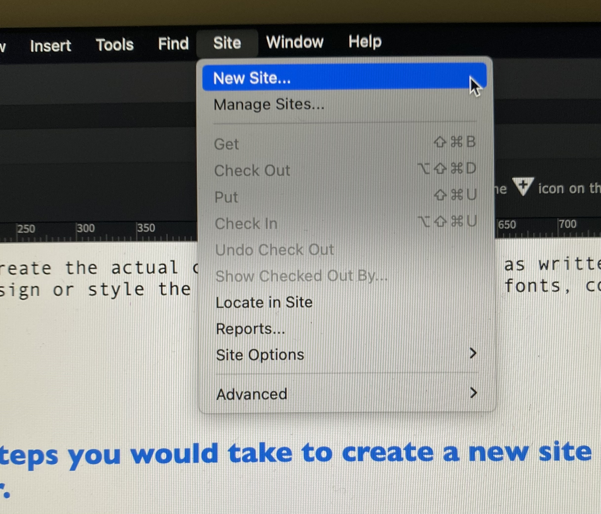
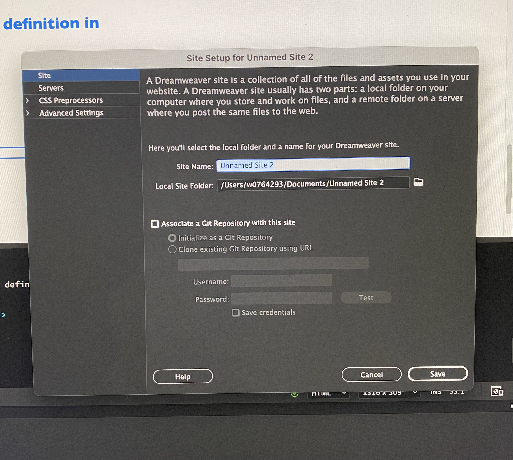
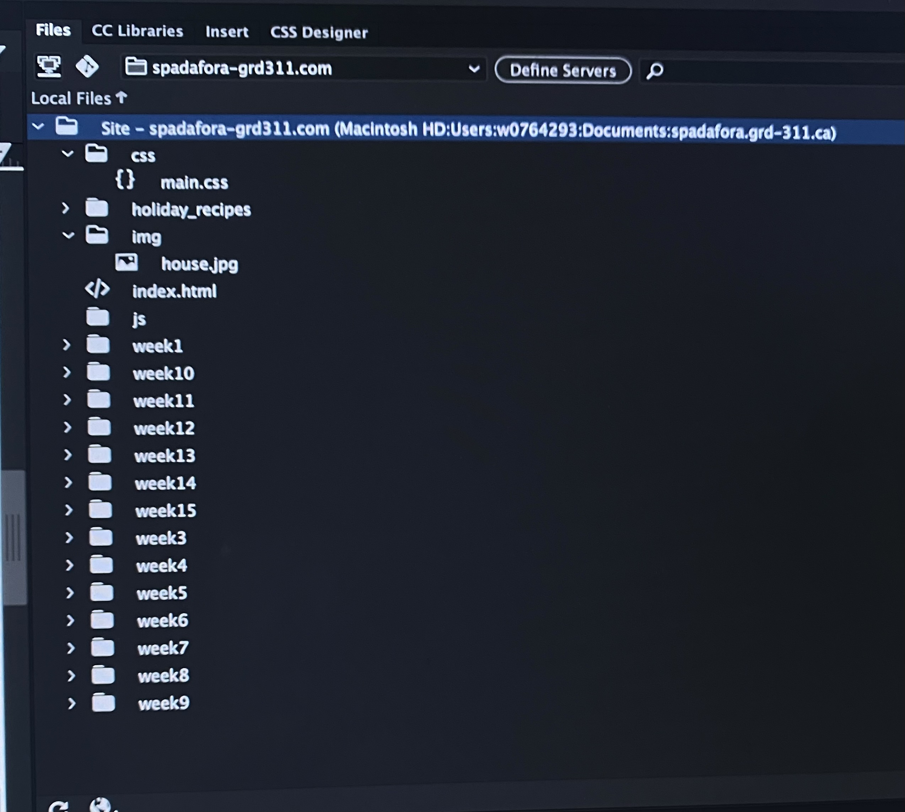

What is a computer directory structure?
A computer directory structure is a file system that organizes and stores files on a computer hard drive. It provides a hierarchial structure that allows user to easily access their files.
What is the root directory?
The top-level directory of the website that contains all other files and folders. This directory is often referred to as the "web root" or "document root".
What is the purpose of subdirectories?
Folders that are created within the root directory to organize content by type, function, or topic. Common subdirectories include "images" for image files, "css" for CSS files, "js" for JavaScript files, and "pages" for HTML files.
What is a file path?
A file path specifies the location of a file in the computers file system. It can be thought of as the physical address to where a specific file or folder lives on your computers hard drive.
Why is the directory structure essential for organizing and managing files on a computer?
The directory structure is essential for organizing and managing files on a computer, as it provides a logical and efficient way to access and locate data. It is used by both operating systems and applications to manage and access files and folders on the computer.
What is HTML?
HTML, or Hyper Text Markup Language is the standard markup language used for displaying documents designed for display within web browsers.
What is the purpose of HTML?
HTML itself is a tag based language used to define elements in a document or Web page by embedding codes (tags) surrounded by common start and stop characters.
What is the difference between HTML and CSS?
HTML is used to create the actual contents of the page, such as written text. Where as CSS is used to design or style the webpage including layout, fonts, colours etc.
Explain the steps you would take to create a new site definition in Dreamweaver.
- Open Dreamweaver.
- Create a new project, or open an existing project.
- Click 'Site' at the top of the page.

- Click 'New site' and give it a name.

- Now, change the folder destination to your route folder.
- Click 'save' when finished.
Explain the steps you would take to create a basic site structure. What elements are required and why?
- Start by creating a 'route folder' on your desktop. This will serve as the main folder that will house every other folder. Give this route an appropriate name.
- Next,start by creating 3 folders within the route folder called, "css", "img", and "js". These will hold images, java script, and css styling elements.
- If desired, create more folders within the route to seperate desired elements further such as, weeks or pages.
- Lastly, we need to create a HTML file to store in the route. This will store all of the html elements for the webpage.
- Open Dreamweaver, and open an existing webpage. click 'File' at the top of the page and click HTML, and name it "index.html".
- Use the same process to create the css file. Click 'File', and select CSS. Name it "main.css".
- The 'index.html' and 'main.css' files can be put into the appropriate files within the route, such as the css folder. The 'index.html' file can be added to other folders to house other html.
- A route folder, a css, img and js folder, html file and css file are required because they create an easily acessible structure to find and organize important files.
 This is an example of a basic site structure.
Explain the steps you would take to add an image to a single page.
- Within the DOM section, on the right hand side in Dreamweaver, click on the 'body' element.
- A plus sign will appear on the left of the element. Click the '+' sign and choose an approprate action such as, insert after or insert child.
- Now, a section called 'div' will appear undeneath the body element. Now you can change the name and type in 'img'.
- This will create an image section within the DOM. Now you will be prompted with a screen asking to find your image within your computers files.
- Once selected, it will insert into the white area on the screen. You can now change the dimensions of your image using the hamburger icon on the left on the image section.
- Note: Make sure the images you would like to insert into your webpage are already inside the 'img' folder within your route folder.
Explain the steps you would take to create an external link to another page.
- Find the text or image you would like to turn into a hyperlink. Next, highlight the text/image and naviagte to the bottom of the page.
- In the properties panel, it should say,'link', now you can begin writing the web address for the webpage you would like to link.
- Once you finish writing the link, it will become a hyperlink. Make sure to save your files and preview your work to check if the link works.